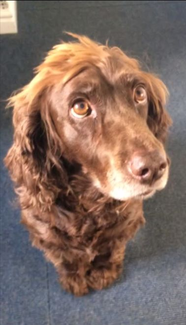
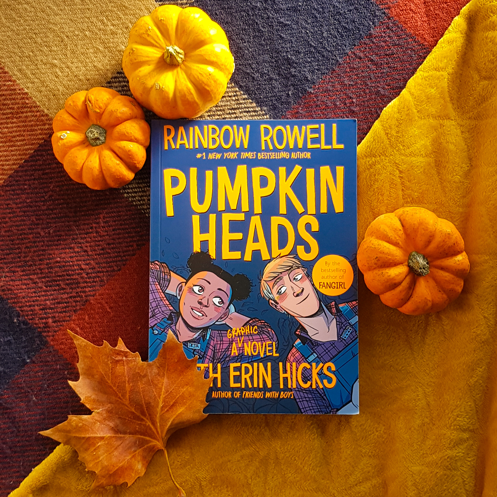

About me


About me
I am Laura Evans, I'm 20 years old and a second year undergraduate student at Oxford Brookes University. I am studying Media, Journalism and Publishing with the intention of going into publishing. For university I live in Oxford but I grew up in Wiltshire. When at home I live five minutes away from the prehistoric monument Stonehenge. I live there with my parents and my brother.

I also have a Sprocker Spaniel called Rosie, she is very cute!

In my spare time I like to read, the genres that I tend to read are young adult and fantasy. Here are a few of the books I've read recently:
Pumpkinheads by Rainbow Rowell and Faith Erin Hicks The Kingfountain Series by Jeff Wheeler Nevermoor by Jessica TownsendI also watch a lot of TV shows on Netflix, Disney + and Amazon, some of my favourites are The Office, Brooklyn 99 and Gavin and Stacey.
During the COVID-19 lockdown I decided to learn a new language, being half Welsh and having a fascination with Wales as a whole I’ve always wanted to learn the Welsh language. So that’s what I decided to start learning. I have a 200 day streak on Duolingo! Here’s a little Welsh: Dw i’n dysgu Cymraeg ond dw i’n ofnadwy! I’ve also picked up an optional module in French this semester, so I’m learning two languages at once which is hard!
I have a bookstagram that I started back in January 2016 and I’ve recently decided to restart it. I have two new posts up and I’m hoping to add more soon! Here is the most recent picture I uploaded: 
Like I said before I’m hoping to go into publishing, more specifically children’s or young adult publishing. For a while now I’ve really wanted to live in Edinburgh as I love the city and have family that live in Scotland. So hopefully in five years I’ll be working for a publishing company in Edinburgh that specialises in children’s publishing. Or, as an alternative, to help develop my Welsh, I’d also love to work for a publishing company in Wales.
Follow me on Goodreads for more content!